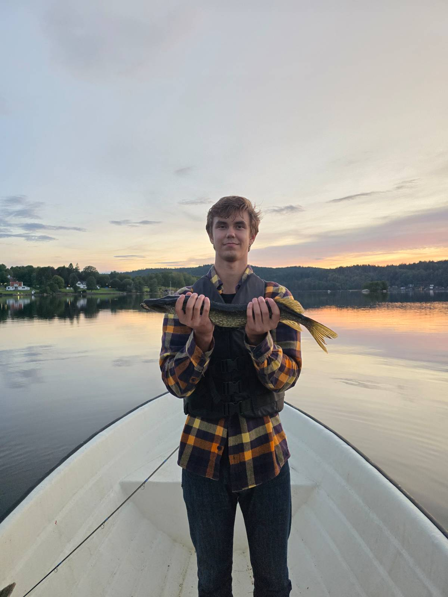
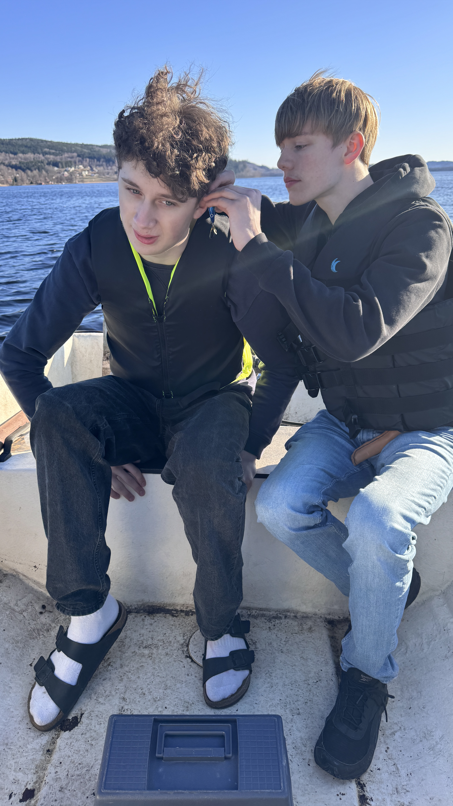
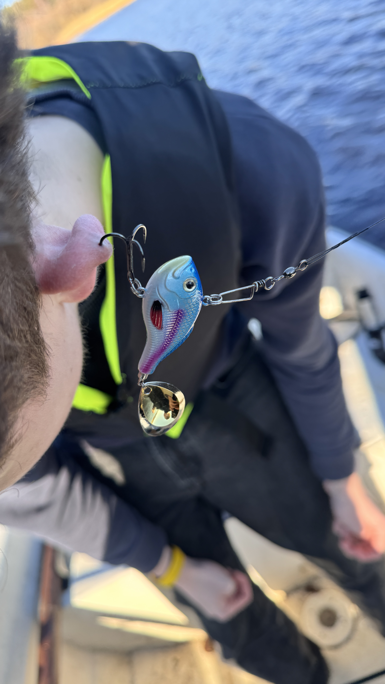

jag är en värdelös fiskare men här är några fina bilder



Jag bestämde mig en dag för att testa fiska, detta var förra året. Jag hade fiskat mycket mycket när jag var liten men det var länge sedan så jag hade i pricnip ingen aning vad jag gjorde. Självklart valde jag att göra med kompisar som var minst lika oerfarna. Jag är fortfarande skit dålig på det:)
Vad för fisk har man fångat då?
ännu mer grejer när man var liten men de räknar jag inte med här